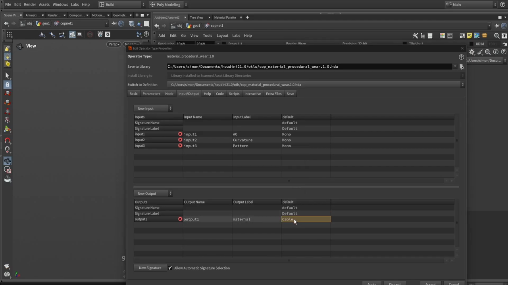
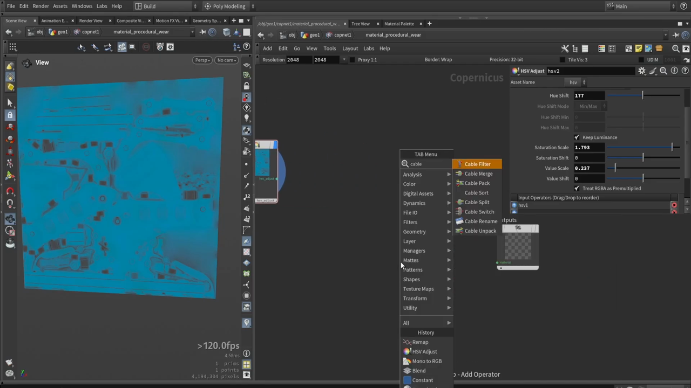

Houdini で斧を作る 8 — マテリアル HDA と Cable 型
出典: Axe Texturing: full breakdown of COPs texturing in Houdini （Simon Houdini さん / 1:04:35 / 英語）の 20:40〜38:51 部分。 このページは、上記の動画を見ながら自分用にまとめた日本語の学習メモです。作者公式の翻訳ではありません。 前回はケージを作ってマップをベイクするでした。
この記事で扱うこと
ここからが本題です。マスクを作り、マテリアル用の HDA を組み立て、ベースカラーを作るまで。 このシリーズで最も密度の高い部分だと思います。
1. 色からマスクを作る
前回焼いた Cd のマップから、パーツごとのマスクを取り出します。
やり方はいくつかありますが、これは他のパッケージに慣れている人には馴染みやすい方法です。 「色が赤ならそこを全部サンプリングする」という考え方です。
- pre-multiply を無効にします。これで普段見慣れた結果になります
- Unlit Mode に切り替えます
- スポイトのアイコンをクリックして、拾いたい部位の色をクリックします
Nullを置いてプレビューすると、白黒のマスクとして確認できます
この手順で3つのマスクを作っていました。
| マスク | 対象 |
|---|---|
| handle mask | ハンドル |
| bolts mask | ボルト |
| mid panel mask | 中央パネル |
刃そのものはベースのマテリアルにして、 その上に他のマスクで上書きしていくという構成です。 そのため刃のマスクは作っていません。
拾った結果に小さな点々（スペックル）が残ることがありますが、 あとから調整できるとのことでした。
2. マテリアルを HDA にする

マテリアルは、ひとつの道具（ツール）として作ります。
マテリアルのプロパティを持つ単純なツールを1つ作って、 それをコピーして少しずつ変えるという進め方をします。 金属やプラスチックなど、性質の違うマテリアルを表現していきます。
設計方針
プロシージャルで、賢く、別のモデルにも対応できるようにしたい。 違うモデルにこのツールを差し込むだけで動くように作ります。
入力と出力
サブネットワークを作り、右クリックから Create Digital Asset を選びます。
名前は material_procedural_wear としていました。
上の画像が入出力の設定です。
| 名前 | ラベル | 型 | |
|---|---|---|---|
| input1 | input1 | AO | Mono |
| input2 | input2 | Curvature | Mono |
| input3 | input3 | Pattern | Mono |
| output1 | output1 | material | Cable |
Pattern は任意のノイズやパターンを差し込む口です。 テスト用にフラクタルノイズを繋いでいました。
Cable という型
出力の型が Cable になっているのがポイントです。
マテリアルは多くの要素からできています。 ゲームで使うなら、通常はカラーマップ、メタルマップ、ラフネスマップ、ノーマルマップ あたりが一般的です。他のマップは、いつも保存しておくには多すぎます。
Cable は複数のテクスチャを1本にまとめて持ち運ぶための型です。
前回の custom 出力と同じ考え方で、パックしたりアンパックしたりできます。

TAB メニューで cable と打つと、専用のノード群が出てきます。
Cable Filter / Cable Merge / Cable Pack /
Cable Sort / Cable Split / Cable Switch /
Cable Rename / Cable Unpack
3. ベースカラーを作る
HDA の中身を組み立てていきます。使うノードは意外と少なめです。
色の基本を置く
Constantで色を作ります。RGB に設定するのを忘れずに- 動画では青を選んで、これをマテリアルの基本色にしていました
パターンを混ぜる
ブレンドで混ぜる方法もありますが、
講師の方は HSV Adjust を使う方法を好んでいました。
- ソースが色、マスクがパターンです
- 値をすべて同じままにすれば何も起きません
- Value を少し下げるとパターンがうっすら出ます
- Hue を少し変えると色味に変化が出ます
上の画像の右側が実際の設定で、
Hue Shift が 177、Saturation Scale が 1.793、
Value Scale が 0.237 になっています。
Keep Luminance と Treat RGBA as Premultiplied にチェックが入っています。
AO を重ねる
アンビエントオクルージョンを乗せる方法も2通り示されていました。
| 方法 | 手順 |
|---|---|
| 掛け算 | Mono to RGB で変換して multiply でブレンド |
| マスクとして使う | HSV Adjust のマスクに入れて Value を下げる |
AO をマスクに使う場合、多くは反転が必要です。
Remap ノードでレンジを反転するボタンを押せば済みます。
AO に色を付けることもできて、動画では茶色っぽい埃の感じを出していました。
ラフネス
ラフネスはひとまず Constant で 0.5。特別なことはしていません。
要素には名前を付けておきます。
ここでは Base Color と Roughness の2つです。
この動画で扱うのはこの2つだけです。 ノーマルマップやメタルネスなどは、必要に応じて足してください。
4. なぜパック／アンパックするのか
できたマテリアルは、そのままドラッグ＆ドロップでは使えません。
Cable Unpack を通し、フィールドを設定すると
ベースカラーとラフネスが自動的に取り出されます。
手間に見えますが、理由がはっきり説明されていました。
なぜパックとアンパックをするのか。 将来マテリアルノードを複数置いたとき、 マスクを使ってマテリアル同士をブレンドするだけで済むからです。 とても速く、レイヤーのように重ねていけます。
つまりマテリアル1つ＝1本のケーブルとして扱えるようにしておくことで、 「金属の上に錆を重ねる」といった操作が、 マップを1枚ずつ配線し直すのではなくケーブル単位のブレンドで済むようになります。
この記事のまとめ
- マスクは pre-multiply をオフ + Unlit Mode + スポイトで色から作れます
- ベースになる部位（この例では刃）のマスクは作らず、上書きしていく構成にします
- マテリアルはHDA にして使い回します。別モデルでも差し込めるように作ります
- 入力は AO / Curvature / Pattern の3つ、すべて Mono
- 出力の型は
Cable。複数テクスチャを1本にまとめられます - 色は
Constant（RGB）＋HSV Adjustでパターンを混ぜます - AO をマスクに使うときは
Remapでレンジを反転します - パック／アンパックするのは、マテリアル同士をマスクでブレンドできるようにするためです
次はラフネスマップを作り込み、HDA を仕上げます。